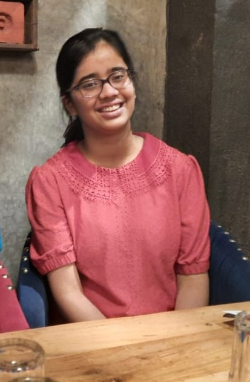

P O R T F O L I O Contact Details:
ABOUT ME:
HELLO EVERYONE!
I am Khushboo Malik.I am currently pursuing my B.Tech 
from CSE(AI-ML) branch from Ajay Kumar Garg Engineering
College. I am fascinated by the world of web-development
and designing,and hence have explored concepts such as
HTML,CSS and JavaScript.I utilize whatever available time
I have to explore more about evolving technologies.I have
also been honing my programming skills and am familiar
with C and C++.My hobbies are reading novels and listening
to music.
MY SKILLS:
HTML/CSS: HTML and CSS are used to create the primary content of a webpage.They are supported by every single browser and are established on pretty much every webpage in existence.I have been exploring the world of HTML/CSS since about a month and have been fascinated by the wonders we can create through it.I have also made some basic projects using HTML and CSS.
Git/GitHub: Git is the most widely used modern version control system in the world today.A staggering number of software projects rely on Git for version control, including commercial projects as well as open source.I have been using Git and GitHub to create my own repositories and collaborate on group projects with my friends and groupmates.I find it to be extremely useful and well-designed with a lot of avalaible features through which we can easily share our own code and also learn more about other's projects.
C/C++: C is considered as a foundation language for many languages.It is a versatile language, so it remains in high demand amongst professionals, such as software developers, game developers, C++ analysts and backend developers, etc. The career or job opportunities for C++ programmers are enormous because C++ is an old language, and a lot of code is already written in this language. I have been coding in C since the beginning of the academic year and have solved a variety of problems based on several concepts such as loops, functions, recursion, etc. I have also developed a strong foundation in C++ by self-practising and learning from my mistakes.